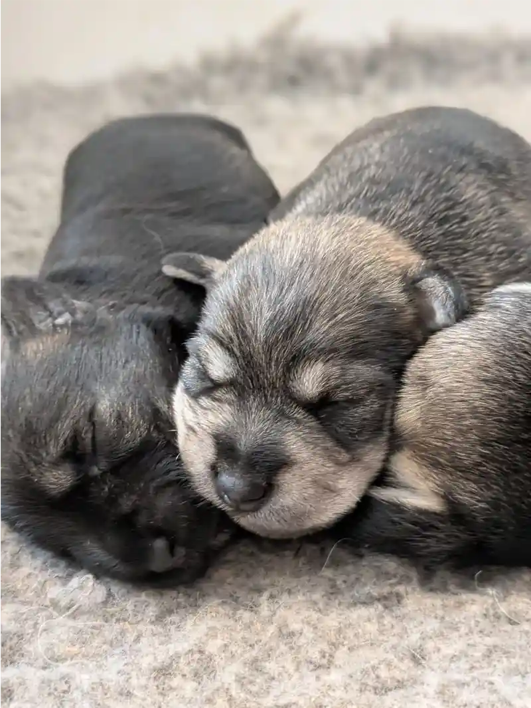

ElysiuM k9 uk
(Facebook Review)
Welcome to
Hiams Hounds
An Ethical, Responsible Breeder
We have been awarded a 5-Star licence by our local
council for our high standards, welfare, and facilities.
license number 24/00730/ANIMAL
East Cambridgeshire district council.
Located in the beautiful Cambridgeshire countryside
near Ely. Dedicated to our passion for dogs,
we strive to breed puppies of excellent quality,
health, and temperament. We specialise in breeding exceptional quality German Shepherds and Miniature
Schnauzers. Each of the puppies we
breed is from health-tested parents coming from
the very best lines we can offer, which includes
many world renowned dogs as well as our own lines.
Meaning you get a pup who
is bred with the breed standard in mind.


All of us working with our dogs are family, we make them our top priority everyday. With years of experience behind us, we believe we can give our pups the very best start in life. Everything we do is from our love for dogs. That's why we only breed for health and temperament, this is our priority in our breeding.
We are always available to our wonderful puppy owners for advice. Not only through the puppy stage but beyond that. We keep in contact with updates untill they can go home, making sure no one misses out on their progression. Our dogs are always attended to 24/7 without ever leaving them home alone, as in accordance to achieving the highest standards possible.
1 / 11
Our beautiful male shepherd Rip is now 11 1/2 months and
what can I say what a lad!
Very confident full of
character and no nerv a joy to
train and a wonderful partner helping me train other
dogs! Mizzy is just fantastic from first contact all the
way to pick up and beyond. Highly recommend a rare
ethical breeder that produces fantastic dogs.
5 stars all the way !

2 / 11
Bobby
(Google Review)
(Google Review)
I definitely would recommend Hiams Hounds. Very friendly and helpful. Picked up our pup Bobby up a couple of weeks ago. At 9 weeks he’s already toilet trained and has learnt the commands sit, paw, down and stay. Thank you again.
3 / 11
Emma Milner
(Google Review)
(Google Review)
We would 100% recommend Hiams hounds. We picked our Finley from 2 weeks of age and every week up until we picked him up we got photos and telling us how his week went and also visited him again before picking him up. They are such knowledgeable breeders and answered any questions I had. He gets so many compliments and is such a delight to have he is also willing to learn quick and understands the training well.
4 / 11
Helen Mckeown
(Google Review)
(Google Review)
Great experience from start to finish … we’ve had
Koda for near 3 months now and he’s just perfect …
the breeders were great and have a wealth of knowledge
about their dogs and this breed …. Traveled from Scotland
to get him and it was worth the long drive … great health
great temperament beautiful coat
… thanks so much to you all …
5 / 11
Henry Harrison
(Google Review)
(Google Review)
Excellent. Lovely dogs, lovely ppl, and they definitely don't need a doorbell :P
6 / 11
Kayleigh Ryder
(Google Review)
(Google Review)
We picked up our two puppies in January 2023. Both boys are incredibly easy to train and always get so many compliments on how well behaved they both are. These are the best breeders, we had puppy updates every week and both dogs came with all the paperwork needed. I would highly recommend! Keep up the good work guys.
7 / 11
Macey
(Google Review)
(Google Review)
We got our German shepherd puppy January 2023,
She is a darling and the breeders are 100%
lovely and professional. They sent me loads of
photos before picking up the puppy and let me
come to see her whenever I liked. They take good
care of their dogs and treat them like Queens and
Kings. My puppy is very confident and food driven.
Thank you so much 🥰
Amy and Jack x
8 / 11
Bethany Holme
(Google Review)
(Google Review)
We bought our German Shepherd puppy with Hiams in Jan 2022. After a bad time with our last pup, the whole experience was brilliant. Before picking our pups up, we were sent constant update and pictures. On picking our pup up we were given all of the documents needed and you can tell how brilliant the care the dogs receive. We saw the mum. Our pup is now a year old and is gorgeous, so healthy. We would definitely recommend Hiams Hounds to anyone.
9 / 11
Samantha Cox
(Google Review)
(Google Review)
Very helpful with the purchase of our puppy. Saw mum and dad. Very sociable puppy. Mum was calm and sociable. Would recommend.
10 / 11
Lois Sidney
(Testemonial)
(Testemonial)
From my very first contact with Hiams Hounds, they were friendly and helpful. They were interested to know that I was an experienced German Shepherd owner. They let me know when the pups were born, sent me pictures right from birth to when I collected him, and were very friendly and accomodating when I went to view the pups and then pick mine up. The pups were beautiful, strong, and healthy puppies, raised in a lovely environment. When I got my puppy home, he was so relaxed and confident, exploring in the garden and playing with his toys. I would absolutely recommend Hiams Hounds for great service and beautiful, healthy pups.
11 / 11
Michael Cowan
(Testemonial)
(Testemonial)
Nellie has been with us for a while now. She has developed her own personality which goes from "leave me alone" to " I love you, give me a cuddle pls". She is so unbelievably clever which makes us so proud of her. She has the heart and bravery of a lion, but a tickle on her belly turns her into a pussy cat. She has changed our lives so much it is impossible to explain. you will never know how meeting you, and you providing us with the greatest thing that has ever happened to us has changed our lives forever. Thank you for Nellie.